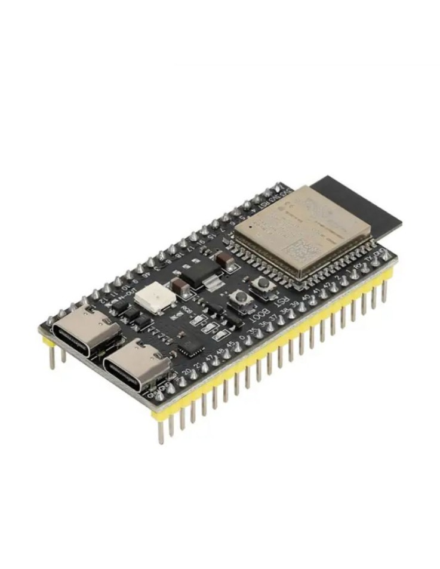
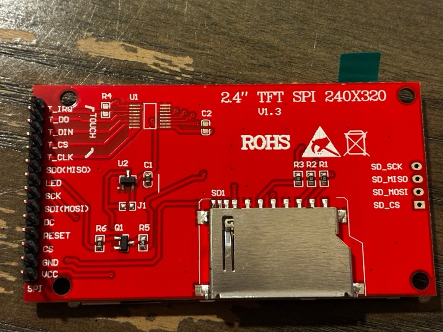
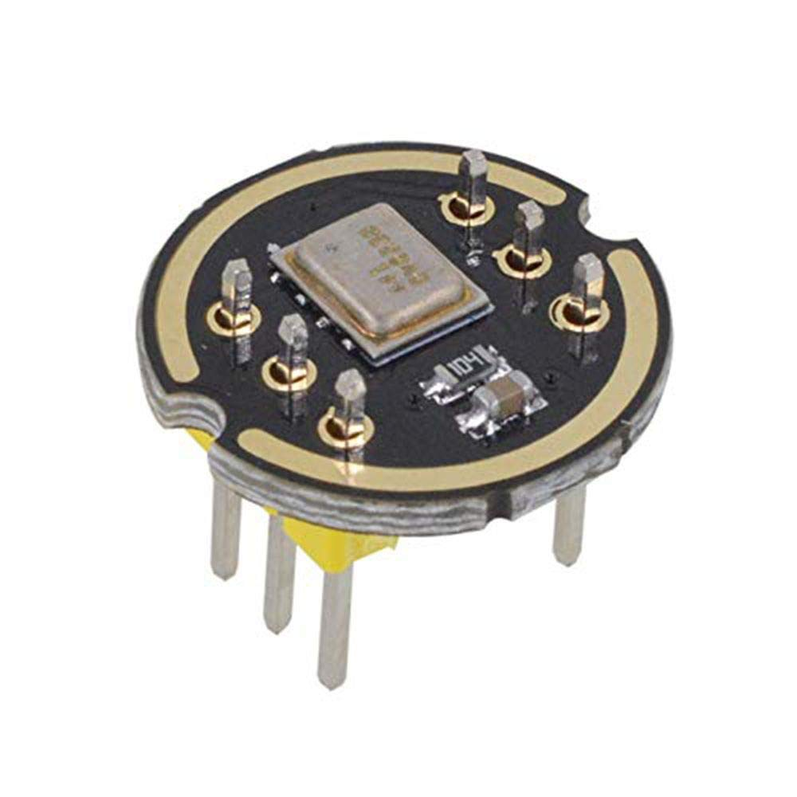
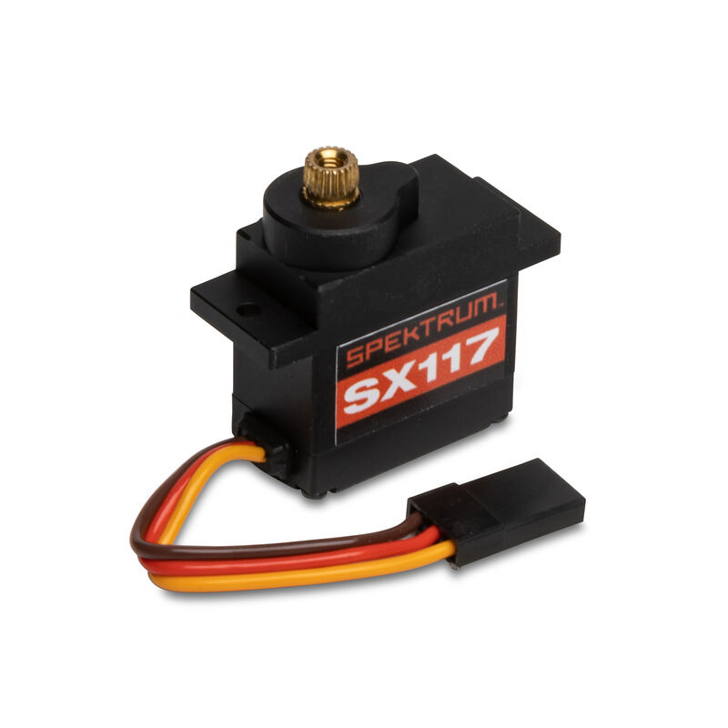

Build Your Own Talking Robot Friend!
Push a button, ask any question, and your robot talks back!
You will build it yourself with real electronics.
1What are we making?
Imagine a tiny robot on your desk. You press its button and ask, “Why is the sky blue?” A moment later, it answers out loud!
Your robot does not know everything by itself. It has a tiny brain, but it calls a super-smart helper on the internet called Gemini. Think of it like phoning a very clever friend who always picks up.
2How does it work?
- You press the button. The brain wakes up and calls Gemini over WiFi.
- You talk. The microphone turns your voice into numbers. (Yes, computers turn sounds into numbers!)
- The numbers fly to Gemini. Gemini understands you and thinks of an answer.
- The answer comes back as numbers. The amplifier turns them back into sound and the speaker says it out loud!
3Meet your parts
Every part is like a part of a body.

🧠ESP32-S3 board
The brain. A tiny computer the size of a stick of gum. It runs our code.
🔎 Look for “ESP32-S3” on the little metal square.
😀Face screen (2.4" colour)
The face. A colour screen that shows eyes and a smile. It blinks, looks around and talks!
🔎 Turn it over: a row of 14 pins named CS, DC, VCC…⚠️ Delicate. Hold it by the edges and never press on the glass.
👂Microphone (INMP441)
The ear. It listens to your voice.
🔎 “INMP441” is printed on it, with a tiny hole on top. 📣
📣Amplifier (MAX98357)
The voice box. It makes the sound strong enough to hear.
🔎 “MAX98357” and little green screw blocks. 🔊
🔊Speaker
The mouth. The sound comes out here.
🔎 A round disc with two thin wires. 🔘
🔘Push button
The “talk now!” switch.
🔎 A shiny metal ring you can press.⚠️ Yours has several wires. We only use two: NO and C. Breadboard Buddy step 13 shows which ones. 🧵
🧵Breadboard + wires
Where everything plugs in. No glue, no soldering! We use the Makeronics BB-102 (two strips, 61 columns each).
🔎 Two long strips, each with a red and a blue line. Find the 30 in the middle: every rail is cut in half there. Other breadboards work too, but the column numbers change.🎁 Extra parts for later
Your kit has more parts. We do not need them today. They are for upgrades after your robot talks!
Battery charger (TP4056)
Charges a rechargeable battery so the robot can go anywhere.
🔎 Blue board with a USB-C plug and “4056” printed on it.⚠️ Batteries need a grown-up!
🦾Servo (MG90S)
A tiny motor that turns to an exact spot. It can make your robot nod!
🔎 A small box with three wires and a little white arm.4Set up your computer (one time)
You need one free program called Arduino IDE. It is where you load instructions into the brain. Do this part once with a grown-up. It takes about 20 minutes, mostly waiting.
💻 What computer do you have?
🤔 Not sure which Mac chip you have?
- Click the Apple menu (the apple at the very top-left of your screen).
- Click About This Mac.
- Look at the line called Chip or Processor. If it says “Apple M1”, M2, M3 or M4, press the Apple chip button. If it says “Intel”, press the Intel chip button.
-
👆 Pick your computer above to see which download to click.On that page find Arduino IDE 2 and click macOS Apple Silicon (the button labels may look a little different). Open the file you downloaded and drag Arduino IDE into Applications, then open it. If your Mac asks “Are you sure you want to open it?”, a grown-up clicks Open.On that page find Arduino IDE 2 and click macOS Intel (the button labels may look a little different). Open the file you downloaded and drag Arduino IDE into Applications, then open it. If your Mac asks “Are you sure you want to open it?”, a grown-up clicks Open.On that page find Arduino IDE 2 and click Windows 10 and newer, 64 bits (the button labels may look a little different). Open the file you downloaded and click through the installer. If a blue “Windows protected your PC” box shows up, a grown-up clicks More info and then Run anyway. If it asks to install drivers or USB software, click Install.
🧾 Tools menu cheat sheet
Six quick settings tell Arduino IDE which board you have. They all live in the Tools menu, in the menu bar at the topthe menu bar at the very top of your Mac screenthe menu bar at the top of the Arduino window.
| In the Tools menu, click… | Then choose… | Done? | |
|---|---|---|---|
| 1 | Board → esp32 | ESP32S3 Dev ModuleDo this one first! The other items only show up after you choose this board. The list is long, so scroll down until you see the name. | |
| 2 | USB CDC On Boot | Disabled or EnabledIt depends on which of the board's two USB ports your cable is in. Look at the label printed on the board: cable in the port marked COM? Choose Disabled. Cable in the port marked USB? Choose Enabled. (Don't go by the name your computer shows. Some boards show the same kind of name for both ports.) Wrong choice = the Serial Monitor is empty or full of strange symbols. | |
| 3 | Flash Size | 16MB (128Mb) | |
| 4 | PSRAM | OPI PSRAMThere are 3 choices. Pick the one that says OPI. | |
| 5 | Partition Scheme | 16M Flash (3MB APP/9.9MB FATFS)Many choices look alike. Look for 16M at the start and 3MB APP. | |
| 6 | Port | The new portFirst plug the USB cable into one of the board's two ports (the one marked COM is the easiest). Then open Tools → Port and pick the one that just appeared. 🔎 Trick: open Tools → Port before you plug in and look at the list. Plug the board in and open it again. The new name in the list is your board! On a Mac it looks like /dev/cu.usbserial-…. On Windows it looks like COM3.On a Mac it looks like /dev/cu.usbserial-… or /dev/cu.usbmodem…. Ignore names that say Bluetooth or debug-console. They are not your board.On Windows it looks like COM3 or COM5 (the number changes). That is just Windows' name for the port. It is not the word “COM” printed on the board. |
0 of 6 settings done
✅ How to check: your Tools menu should end up like this
Open the Tools menu again and compare. Everything else in the menu stays just as it is. In the bottom-right corner of the Arduino IDE window you should also see ESP32S3 Dev Module and the name of your port.
����. After you change the setting, upload again.What is a “sketch”? It is Arduino's word for a program. A sketch is a folder that holds one main file ending in .ino plus a few helper files. When you open the .ino file, the helper files show up as tabs across the top of the Arduino window (config.h, face.cpp, and so on). The folder and the main file must have the same name, which is why the folders must stay whole.
This project has four sketches, all inside the arduino folder:
Face_Demo: just the face on the screen. Needs only the brain and the screen. You use this one first.AI_Companion: the whole talking robot. This is the main one.Button_Test: a helper that finds the right two wires on the push button.TFT_Test: a helper that tests the colour screen all on its own.
Where do the folders come from? You download them once:
- Open github.com/Kukaratza/ai-companion-robot, click the green Code button, then Download ZIP. (If you know git:
git clone https://github.com/Kukaratza/ai-companion-robot.git.) - Unzip it. On a Mac, double-click the zip file. On Windows, right-click it and choose Extract All…Unzip it: double-click the zip file in your Downloads folder (Safari may have done this already).Unzip it: right-click the zip file in your Downloads folder and choose Extract All… Do not open the files from inside the zip.
- You now have a folder called
ai-companion-robot-main. The sketches are inside it:ai-companion-robot-main / arduino / AI_Companion~/Downloads/ai-companion-robot-main/arduino/AI_CompanionC:\Users\YourName\Downloads\ai-companion-robot-main\arduino\AI_Companion
To open a sketch: in Arduino IDE click File → Open…, go into the sketch folder, and choose the file ending in .ino (for example AI_Companion.ino).
Please remember
- Keep each sketch folder whole. Don't move or rename the
.inofile on its own, and don't delete the helper files. - Your WiFi name, password and Gemini key go into the
secrets.htab, which is saved inside that folder. Never share that folder or upload it with the real key inside. - If you download the ZIP again later, you get a fresh folder with a blank
secrets.h. Copy your ownsecrets.hinto it before you upload.
Board package: it must be the Espressif 3.x series, because the code uses ESP_I2S.h.
5First, give it a face! 😀
Before the ears and the voice, let's make your robot come alive. In about 15 minutes it will be blinking at you!
🔌 Step A · Plug it in
Open Breadboard Buddy with the big pink button in the yellow banner just below, and follow steps 1 to 6. It shows every wire for the face screen (8 of them), and has a checklist so you can tick each one off.
Come back here when the face screen has its 8 wires.
⬆️ Step B · Wake up the face
- Plug in the USB cable (the port marked COM).
- In Arduino IDE click File → Open… and choose
arduino / Face_Demo / Face_Demo.ino. (Where is that folder? See the grown-up corner in section 4.) - Check the Tools menu settings and pick your Port. They are all listed in the 🧾 Tools menu cheat sheet (section 4).
- Click the → Upload arrow at the top left. Wait for “Done uploading”.
- Watch the screen. It smiles, then blinks and looks around! 🎉
The Face_Demo only needs the brain and the screen. No microphone, speaker or WiFi yet!
👇 Try the faces right here
This is what the real screen will show. Click a mood!
| Face | Means |
|---|---|
| 😄 Smiling eyes | Hello! The robot just woke up. (On the real robot this lasts a few seconds, then it goes back to waiting.) |
| 😐 Blinking eyes | Waiting for you. Press the button! |
| 👂 Big eyes and dots | Listening. Talk now! |
| 🤔 Eyes looking around and “...” | Thinking of an answer. |
| 🗣️ Moving mouth | Talking to you. |
About the screen. It is a 2.4" colour screen with 240×320 dots and an ILI9341 chip, driven over SPI. It also has a touch layer and an SD card slot, which this project does not use. The robot lays the screen on its side (widescreen, 320 dots across).
If the screen stays dark or shows junk. The screen only listens, so the robot cannot tell whether it is plugged in. Check in this order:
- Run the
TFT_Testsketch. It shows colour bars and a blinking face. - Power: VCC on the brain's 5V pin, LED on the red 3.3V rail, GND on the blue rail.
- The 5 data wires match the Breadboard Buddy list: CS 13, RESET 12, DC 11, SDI 10, SCK 9.
- Static or strange colours: loose or tangled wires. Tidy them, or set
TFT_SPI_HZto4000000inconfig.h.
Two optional settings in the config.h tab:
TFT_ROTATION:1or3only (the face is wide). If the face is upside down, change it to the other one.0and2are the tall screen and cut the face off.FACE_ENABLED: set it to0and the robot works without a screen.
6Connect the wires
All the wiring happens in Breadboard Buddy. It shows every wire, one at a time, with the pin lists and checkboxes right there.
7Teach the brain
The brain needs instructions. Those instructions are called code. The code is already written. You only need to load it and change three lines.
-
secrets.h tab ← change these 3 lines!
#pragma once #define WIFI_SSID "your-wifi-name" #define WIFI_PASS "your-wifi-password" #define GEMINI_API_KEY "your-magic-password"
secrets.h private, never post it online, and set a usage limit in Google AI Studio. The code is also not yet tested on real hardware, so a little debugging is normal.8Try it! 🎉
This is the big moment! Follow the steps in order. Each step tells you what to look at, read or listen for, so you always know if it is working.
- The USB cable is plugged in.
- Arduino IDE said “Done uploading”.
- The Serial Monitor is open. It is the robot's diary, a little window where the robot writes what it is doing. Open it with the magnifying glass 🔍 at the top right of Arduino IDE, and pick
115200 baudat the bottom. If it stays empty or shows strange symbols, see USB CDC On Boot in the cheat sheet.
- Wait for the robot to wake up.
📖 In the diary: dots
.....and thenWiFi OK. That means the robot found the internet! 👀 On the screen: a smile and the word HELLO!, then blinking eyes and READY. - Press the big button once.
👀 On the screen: eyes swinging side to side and THINKING. The robot is calling Gemini.
📖 In the diary:
Session starting, thenGemini ready. Gemini ready means “I'm connected and listening!” - Talk to your robot. Wait for big round eyes and the word LISTENING. Then say clearly, close to the microphone: 🗣️ “Tell me a joke about space!”
- Listen! Your robot is talking back! 🚀 👀 On the screen: a moving mouth and TALKING. 👂 From the speaker: the answer, out loud.
- Keep chatting, or hang up. After the answer you can talk again. When you are finished, press the button again.
📖 In the diary:
Session ended. 👀 The face goes back to READY.
You built an AI robot!
Take a photo and show your friends.9Make it yours: customize your robot!
Your robot works! Now make it YOURS. Give it a personality, a new voice, its own look. Every change is just a few words. Change, upload, and try it!
🤖 Robot Maker
Pick a ready-made personality, or make up your own. The box at the bottom fills in by itself!
⌨️ Showing shortcuts for your computer. Change it in section 4.
- In Arduino IDE, click the
config.htab. At the very top you will see MAKE IT YOURS with 5 settings. - Click at the start of the first line (
// 1) WHO is your robot?) and drag down to the end of the line#define WAKE_PHRASE. All 11 lines turn blue. - Click Copy above, then press ⌘ + V to paste over them.
- Click the → Upload arrow. Then press the button and say hi to your new robot!
arduino folder.😀 Change its face
Click the face.cpp tab, find the line, change it, then Upload. (Click inside the code first and press ⌘ + F to search for the line.)
"READY""HI!"The word in the coloured strip changes. Use your own name!
RGB565(0, 220, 255)RGB565(255, 80, 80)Red eyes for the waiting face! Mix your own colours: each number goes from 0 to 255.
const int ew = 76, eh = 84;const int ew = 100, eh = 84;Wider eyes! Try eh = 110 for taller eyes too.
nextBlink = now + random(2000, 5500);nextBlink = now + random(300, 900);Your robot blinks super fast, like it has something in its eye.
Now click the AI_Companion.ino tab:
else faceSet(FACE_LISTEN);else faceSet(FACE_SLEEP);Your robot looks sleepy while it listens to you! Change it back after you laugh.
🏅 Customize challenges
🔍 Curious? Peek inside and read the code!
Code is just a list of instructions, like a recipe. The computer follows it one line at a time, super fast. Every file is already in your arduino folder. These pages show them so you can read them.
🔤 Code words you will see
// like thisA note for humans. The robot skips it. Green in our pictures. Always read the green notes!
#define SPK_VOLUME 60A label on a box. Change the 60, change the loudness.
void setup() { }Runs one time, when the robot wakes up.
void loop() { }Runs again and again, forever, super fast.
if (buttonPressed()) { }A question. If the answer is yes, do the lines inside.
bool lastButton = HIGH;A variable: a labelled box that remembers something.
faceSet(FACE_HAPPY);A function call: asking a mini recipe to do its job.
{ } and ;Curly brackets hug lines that belong together. The ; is the full stop at the end of a line.
config.h · The settings list
What it does: a list of names and numbers the whole robot reads. It says which pin each part uses, how loud to be, and who your robot is.
- Each line starts with
#define, then a name, then a value. - Pins are numbers like
42. They match the wires you plugged in. - The text between
" "quotes is words the robot will use.
#pragma once
// ==========================================================
// MAKE IT YOURS (the fun part! Change these settings)
// ==========================================================
// 1) WHO is your robot? Change the words between the quotes.
#define SYSTEM_PROMPT "You are a friendly desktop companion. Keep answers short, fun and kid-friendly."
// 2) What VOICE does it have? Try "Puck", "Kore", "Charon", "Fenrir" or "Aoede".
#define GEMINI_VOICE "Puck"
// 3) How LOUD is it? 0 = silent, 100 = very loud.
#define SPK_VOLUME 60
// 4) Wake up when you say a phrase? 1 = yes, 0 = no (use the button).
#define WAKEWORD_ENABLED 0
// 5) The wake-up phrase: "Hi" + your robot's name, like "Hi Jarvis". Use plain English
// words that sound the way they are spelled. "Hi ESP" works best.
#define WAKE_PHRASE "Hi ESP"
// ==========================================================
// ==========================================================
// SETTINGS - a list of labels (names) the robot uses.
// "#define NAME value" means: wherever the robot sees NAME,
// use value. Change a value here to change the robot!
// ==========================================================
// --- Which pin is each part plugged into? ---
// All of them are on the brain's pin row that sits next to the breadboard's free holes.
// INMP441 microphone (the EAR)
#define PIN_MIC_SCK 4
#define PIN_MIC_WS 5
#define PIN_MIC_SD 6
// MAX98357 amplifier (the VOICE BOX)
#define PIN_SPK_BCLK 15
#define PIN_SPK_LRC 7
#define PIN_SPK_DIN 16
// The big push button. Push it to start or stop a conversation.
#define PIN_BUTTON 14
// --- Sound settings (please leave these alone) ---
#define MIC_RATE_HZ 16000 // how many sound snapshots per second going IN to Gemini
#define SPK_RATE_HZ 24000 // how many sound snapshots per second coming OUT of Gemini
#define MIC_CHUNK_SAMPLES 1600 // how many snapshots we send at once (0.1 seconds)
// --- Gemini settings ---
// Verify against Google's current Live API docs
#define GEMINI_MODEL "models/gemini-2.5-flash-native-audio-preview-09-2025"
// --- Microphone sensitivity ---
// Mic too quiet? Make MIC_SHIFT smaller (like 12). Too loud? Make it bigger (like 16).
#define MIC_SHIFT 14
// --- Say its name (only when WAKEWORD_ENABLED is 1) ---
// Which listener? 1 = the built-in one. It hears WAKE_PHRASE ("Hi ESP" works best).
// 2 = YOUR OWN trained wake word (a teen project, see wakeword.cpp)
#define WAKE_ENGINE 1
// After this many quiet seconds the robot hangs up and goes back to sleep.
#define SESSION_IDLE_SECONDS 15
// --- The face (the big 2.4" colour screen, 240 x 320, ILI9341) ---
// 1 = use the face, 0 = run without it
#define FACE_ENABLED 1
// The screen's 5 data wires. The names on the screen's pins are in the comments.
#define PIN_TFT_CS 13 // screen pin CS
#define PIN_TFT_RST 12 // screen pin RESET
#define PIN_TFT_DC 11 // screen pin DC
#define PIN_TFT_MOSI 10 // screen pin SDI (MOSI)
#define PIN_TFT_SCK 9 // screen pin SCK
// How fast the data wires talk. If you see static or strange colours, try 4000000.
#define TFT_SPI_HZ 10000000
// The face is WIDE (320 across), so use 1 or 3 only. If the face is upside down, change it
// to the other one. (0 and 2 are the tall screen and are not allowed.)
#define TFT_ROTATION 1AI_Companion.ino · The boss
What it does: the first file that runs. It wakes everything up, then checks the button, picks the face, and sends your voice to Gemini.
setup()runs once: open the diary, start the face, join WiFi, get the ear and mouth ready.loop()has 3 jobs, numbered in the green notes: 1) check the button, 2) choose the face, 3) send sound.- Words like
audioInReadare recipes that live in the other files.
// ==========================================================
// MY TALKING ROBOT - the main file (the "boss" of the robot)
// Press the button, talk, and the robot answers out loud!
// ==========================================================
// These lines bring in "toolboxes" that other people (and we) wrote.
#include <Arduino.h> // the basic Arduino tools
#include <WiFi.h> // lets the robot use the internet
#include "audio_in.h" // our EAR (the microphone)
#include "audio_out.h" // our MOUTH (the speaker)
#include "config.h" // our settings
#include "face.h" // our FACE (the little screen)
#include "gemini_live.h" // the phone line to Gemini
#include "secrets.h" // our WiFi name and password
#include "wakeword.h" // the sleeping ear that listens for "Hi, ESP!"
// A "variable" is a labelled box that remembers something.
// This box remembers if the button was up (HIGH) or pushed down (LOW).
static bool lastButton = HIGH;
static bool wasActive = false; // were we in a conversation a moment ago?
static uint32_t lastActive = 0; // the last time someone was talking
// A "function" is a mini recipe with a name.
// This one answers the question: "was the button JUST pressed?"
static bool buttonPressed() {
bool b = digitalRead(PIN_BUTTON); // look at the button right now
bool pressed = (lastButton == HIGH && b == LOW); // it was up, and now it is down
lastButton = b; // remember it for next time
if (pressed) delay(30); // wait a tiny bit so one push counts once
return pressed;
}
// setup() runs ONE time, when the robot wakes up.
void setup() {
Serial.begin(115200); // open the robot's "diary" so it can write messages
delay(500);
Serial.printf("PSRAM: %u bytes\n", ESP.getPsramSize()); // write how much memory we have
pinMode(PIN_BUTTON, INPUT_PULLUP); // get the button ready
#if FACE_ENABLED
faceBegin(); // wake up the face. It says hello with a happy smile!
#endif
WiFi.begin(WIFI_SSID, WIFI_PASS); // join the WiFi
while (WiFi.status() != WL_CONNECTED) { // keep waiting until we are connected
delay(300);
Serial.print('.'); // write a dot in the diary every time we wait
}
Serial.printf("\nWiFi OK: %s\n", WiFi.localIP().toString().c_str());
audioInBegin(); // get the ear ready
audioOutBegin(); // get the mouth ready
#if WAKEWORD_ENABLED
if (wakeBegin()) Serial.println("Say \"Hi, ESP!\" to wake me up (or press the button)");
else Serial.println("Wake word is not working - use the button (check the Partition Scheme)");
#else
Serial.println("Press the button to talk");
#endif
}
// loop() runs OVER and OVER, forever, super fast.
void loop() {
// 1) Was the button pressed? Then start or stop a conversation.
if (buttonPressed()) {
if (geminiActive()) {
geminiEnd(); // we were talking, so hang up
Serial.println("Session ended");
} else {
geminiBegin(); // we were not talking, so call Gemini
Serial.println("Session starting");
}
}
geminiLoop(); // keep the phone line working
// Was the robot's name heard while it was sleeping? Then call Gemini!
if (!geminiActive() && wakeHeard()) {
Serial.println("I heard my name!");
geminiBegin();
lastActive = millis();
}
// When a call starts, stop listening for the name. When it ends, listen again.
bool active = geminiActive();
if (active && !wasActive) { wakePause(); lastActive = millis(); }
if (!active && wasActive) wakeResume();
wasActive = active;
#if FACE_ENABLED
// 2) Choose the right face for what the robot is doing right now.
if (!geminiActive()) faceSet(WAKEWORD_ENABLED ? FACE_SLEEP : FACE_IDLE); // waiting for you
else if (!geminiReady()) faceSet(FACE_THINK); // calling Gemini...
else if (audioOutPending()) faceSet(FACE_SPEAK); // the robot is talking
else faceSet(FACE_LISTEN); // the robot is listening
#endif
// 3) If the call is ready, send what the microphone hears to Gemini.
if (geminiReady()) {
static int16_t chunk[MIC_CHUNK_SAMPLES]; // a little bucket of sound
size_t n = audioInRead(chunk, MIC_CHUNK_SAMPLES); // fill it from the microphone
// Don't send sound while the robot is talking, or it would hear itself!
if (n && audioOutPending() == 0) geminiSendAudio(chunk, n);
#if WAKEWORD_ENABLED
// Keep track of whether anyone is talking. If it is quiet for a while,
// hang up and go back to sleep.
long loud = 0;
for (size_t i = 0; i < n; i++) loud += abs(chunk[i]);
if (n && (loud / (long)n > 400 || audioOutPending())) lastActive = millis();
if (millis() - lastActive > SESSION_IDLE_SECONDS * 1000UL) {
geminiEnd();
Serial.println("Quiet for a while - going back to sleep");
}
#endif
} else {
delay(5);
}
}face.cpp · The face
What it does: draws the eyes, smile and mouth on the big colour screen about 10 times every second. Fast drawings look like movement, like a flip book!
- The screen lies on its side: 320 dots across and 240 down.
(0, 0)is the top-left corner. - The robot draws on a hidden board (
canvas) first and then shows the whole picture at once, so nothing flickers. eye(x, y, width, height, colour)draws one eye. Blinking just makes the height smaller for a moment.- Every mood has its own word and colour, in two lists near the top.
// THE FACE: draws the robot's eyes and mouth on the big colour screen.
#include "face.h"
#include <SPI.h>
#include <Adafruit_GFX.h>
#include <Adafruit_ILI9341.h>
#include "config.h"
// Make a colour from amounts of red, green and blue (0 to 255 each).
#define RGB565(r, g, b) ((((r) & 0xF8) << 8) | (((g) & 0xFC) << 3) | ((b) >> 3))
#define BLACK 0x0000
// The screen lies on its side: 320 dots across and 240 dots down. (0, 0) is the top-left corner.
static const int W = 320;
static const int BAND = 40; // the coloured strip at the top that shows a word
static const int FX = 20, FY = 48; // where the face picture starts
static const int FW = 280, FH = 184; // how big the face picture is
// One word and one colour for every mood. The order matches the list in face.h.
static const char *LABEL[] = {"READY", "HELLO!", "LISTENING", "THINKING", "TALKING", "ZZZ"};
static const uint16_t COLOUR[] = {
RGB565(0, 220, 255), // READY: cyan eyes
RGB565(255, 120, 190), // HELLO: pink eyes
RGB565(90, 255, 140), // LISTENING: green eyes
RGB565(190, 140, 255), // THINKING: purple eyes
RGB565(255, 220, 60), // TALKING: yellow eyes
RGB565(110, 150, 255), // ZZZ: blue eyes
};
static Adafruit_ILI9341 tft(&SPI, PIN_TFT_DC, PIN_TFT_CS, PIN_TFT_RST); // "tft" is our name for the screen
static GFXcanvas16 canvas(FW, FH); // a hidden drawing board: we draw there, then show it all at once (no flicker!)
static volatile FaceMood mood = FACE_IDLE; // which face are we making right now?
static volatile uint32_t moodSince = 0; // when did this face start?
// Other files call this to change the face, like faceSet(FACE_HAPPY).
void faceSet(FaceMood m) {
if (m != mood) {
mood = m;
moodSince = millis(); // millis() = how many milliseconds since the robot woke up
}
}
// Draw ONE eye: a rounded rectangle. cx, cy = its centre. w = width, h = height.
static void eye(int cx, int cy, int w, int h, uint16_t colour) {
if (h < 6) h = 6; // never thinner than a line
canvas.fillRoundRect(cx - w / 2, cy - h / 2, w, h, min(24, h / 2), colour);
}
// Colour the strip at the top and write the mood's word on it.
static void header(FaceMood m) {
tft.fillRect(0, 0, W, BAND, COLOUR[m]);
tft.setTextSize(3);
tft.setTextColor(BLACK, COLOUR[m]);
tft.setCursor(12, 9);
tft.print(LABEL[m]);
}
// This "task" runs on its own, all the time, like a little artist inside the robot.
static void faceTask(void *) {
const int LX = 70, RX = 210, CY = 78; // where the LEFT eye, RIGHT eye and eye height are
const int ew = 76, eh = 84; // eye width and height
const float blinkScale[] = {0.7f, 0.35f, 0.1f, 0.35f, 0.7f}; // how closed the eye is, frame by frame
int blinkFrame = -1; // -1 means "not blinking right now"
uint32_t nextBlink = millis() + 2500, nextLook = millis() + 3000;
int lookX = 0, lookY = 0; // how far the eyes look left/right and up/down
int shownMood = -1; // which mood's top strip is on the screen
for (;;) { // forever...
uint32_t now = millis();
FaceMood m = mood;
// HELLO only lasts 2.5 seconds, then we go back to READY.
if (m == FACE_HAPPY && now - moodSince > 2500) {
faceSet(FACE_IDLE);
m = FACE_IDLE;
}
if (shownMood != (int)m) { // new mood? Change the strip at the top.
header(m);
shownMood = (int)m;
}
// Time to blink? Step through the blink frames one by one.
if (blinkFrame < 0 && now > nextBlink) blinkFrame = 0;
float bs = 1.0f; // 1.0 = eye fully open
if (blinkFrame >= 0) {
bs = blinkScale[blinkFrame++];
if (blinkFrame >= 5) {
blinkFrame = -1;
nextBlink = now + random(2000, 5500); // blink again in 2 to 5 seconds
}
}
// Every few seconds, look somewhere new.
if (now > nextLook) {
lookX = random(-16, 17);
lookY = random(-6, 7);
nextLook = now + random(1500, 4000);
}
canvas.fillScreen(BLACK); // wipe the hidden board, then draw the new picture on it
const uint16_t c = COLOUR[m];
switch (m) { // pick the drawing that matches the mood
case FACE_IDLE: // waiting: open eyes that blink and look around
eye(LX + lookX, CY + lookY, ew, eh * bs, c);
eye(RX + lookX, CY + lookY, ew, eh * bs, c);
break;
case FACE_HAPPY: // happy: ^ ^ eyes, a smile and rosy cheeks
for (int cx : {LX, RX}) {
canvas.fillRoundRect(cx - 36, CY - 28, 72, 60, 26, c);
canvas.fillCircle(cx, CY + 32, 40, BLACK); // cut away the bottom to make a ^
canvas.fillCircle(cx + (cx < 140 ? -22 : 22), 128, 12, RGB565(255, 90, 120)); // cheek
}
canvas.fillCircle(140, 128, 30, c); // a smile is a half moon:
canvas.fillCircle(140, 112, 30, BLACK); // a circle with the top bitten off
break;
case FACE_LISTEN: { // listening: big round eyes and pulsing dots
eye(LX, CY - 6, ew + 8, (eh + 20) * bs, c);
eye(RX, CY - 6, ew + 8, (eh + 20) * bs, c);
int ph = (now / 200) % 3; // which dot is big right now?
for (int i = 0; i < 3; i++) canvas.fillCircle(100 + i * 40, 160, (i == ph) ? 10 : 6, c);
break;
}
case FACE_THINK: { // thinking: eyes swing side to side and "..." appear
int sway = (int)(22 * sin(now / 350.0)); // sin() makes a smooth back-and-forth
eye(LX + sway, CY - 8, ew, eh * bs, c);
eye(RX + sway, CY - 8, ew, eh * bs, c);
int dots = (now / 350) % 4; // 0, 1, 2 or 3 dots
for (int i = 0; i < dots; i++) canvas.fillCircle(100 + i * 40, 160, 9, c);
break;
}
case FACE_SPEAK: { // talking: a mouth that opens and closes
eye(LX, CY - 10, ew, eh * bs, c);
eye(RX, CY - 10, ew, eh * bs, c);
int mh = 12 + (int)(14 + 14 * sin(now / 90.0 + random(0, 3))); // mouth height wobbles
canvas.fillRoundRect(100, 140, 80, mh, 10, RGB565(255, 120, 120));
break;
}
case FACE_SLEEP: // sleeping: thin closed eyes and a floating z
canvas.fillRoundRect(LX - 36, CY + 4, 72, 8, 4, c);
canvas.fillRoundRect(RX - 36, CY + 4, 72, 8, 4, c);
canvas.setTextColor(c);
canvas.setTextSize(5);
canvas.setCursor(215 + (int)(8 * sin(now / 400.0)), 20);
canvas.print("z");
break;
}
// Show the whole hidden picture on the screen in ONE go: open a window on the
// screen (setAddrWindow), then pour all the dots through it (writePixels).
tft.startWrite();
tft.setAddrWindow(FX, FY, FW, FH);
tft.writePixels(canvas.getBuffer(), FW * FH);
tft.endWrite();
vTaskDelay(pdMS_TO_TICKS(30));
}
}
// Get the screen ready. The screen only LISTENS, so we cannot ask it "are you there?".
// If nothing shows up, check the wires.
bool faceBegin() {
if (!canvas.getBuffer()) {
Serial.println("Face: not enough memory for the picture (is PSRAM set to OPI PSRAM in Tools?)");
return false;
}
SPI.begin(PIN_TFT_SCK, -1, PIN_TFT_MOSI, -1); // no MISO wire: the screen only listens
tft.begin(TFT_SPI_HZ);
// The face is made for the WIDE screen (320 across). Rotations 0 and 2 are the TALL
// screen: the right side of the face would run off the edge. So only 1 and 3 are allowed.
uint8_t rotation = TFT_ROTATION;
if (rotation % 2 == 0) {
Serial.println("Face: TFT_ROTATION must be 1 or 3 (the screen on its side). Using 1.");
rotation = 1;
}
tft.setRotation(rotation);
tft.fillScreen(BLACK);
faceSet(FACE_HAPPY);
xTaskCreatePinnedToCore(faceTask, "face", 6144, nullptr, 1, nullptr, 0); // start the little artist
return true;
}audio_in.cpp · The ear
What it does: listens to the microphone and turns sound into numbers. Big numbers are loud sounds, small numbers are quiet ones. Gemini understands those numbers!
- The microphone sends 16,000 numbers every second. We collect them in a bucket (
raw). - The numbers are too big, so we shrink them with
>> MIC_SHIFT. - If the robot can't hear you, make
MIC_SHIFTsmaller inconfig.h.
// THE EAR: reads sound from the microphone and turns it into numbers.
#include "audio_in.h"
#include "config.h"
static I2SClass mic; // "mic" is our name for the microphone connection
// Other files (like the wake-word listener) share the same microphone.
I2SClass &audioInI2S() { return mic; }
// Get the microphone ready. Runs once from setup().
void audioInBegin() {
// Tell the brain which 3 pins the microphone is plugged into.
mic.setPins(PIN_MIC_SCK, PIN_MIC_WS, -1, PIN_MIC_SD);
// Start listening. The microphone sends a LEFT and a RIGHT sound. Ours only
// talks on the left. If starting does not work, write a message in the diary.
if (!mic.begin(I2S_MODE_STD, MIC_RATE_HZ, I2S_DATA_BIT_WIDTH_32BIT,
I2S_SLOT_MODE_STEREO, I2S_STD_SLOT_BOTH)) {
Serial.println("Mic I2S init failed");
}
}
// Listen for a moment and put the sound into a bucket called "out".
size_t audioInRead(int16_t *out, size_t count) {
static int32_t raw[MIC_CHUNK_SAMPLES * 2]; // a bucket for the raw, big numbers (left + right)
if (count > MIC_CHUNK_SAMPLES) count = MIC_CHUNK_SAMPLES;
size_t frames = mic.readBytes((char *)raw, count * 2 * sizeof(int32_t)) / (2 * sizeof(int32_t));
// The microphone gives BIG numbers. Gemini wants smaller ones,
// so we shrink every number a little (MIC_SHIFT says how much).
// raw[i * 2] is the LEFT number. We skip the empty right one.
for (size_t i = 0; i < frames; i++) {
int32_t s = raw[i * 2] >> MIC_SHIFT;
out[i] = (int16_t)constrain(s, -32768, 32767); // keep it inside the allowed range
}
return frames;
}wakeword.cpp · The sleeping ear
What it does: while the robot sleeps, this tiny listener waits for your wake-up phrase (WAKE_PHRASE in config.h, like “Hi ESP” or “Hi Jarvis”). It runs inside the brain, so nothing is sent to the internet until the phrase is heard.
- When it hears the phrase,
heardturns true, and the boss file calls Gemini. - “Hi ESP” uses the best detector. Other phrases use a general one that reads plain English.
- While you chat, the listener pauses. When the chat ends, it listens again.
- If
WAKEWORD_ENABLEDis0, all of these functions do nothing.
// THE SLEEPING EAR: listens for the robot's name all by itself, inside the brain.
// Nothing goes to the internet until the name is heard.
//
// There are 2 "engines" (listeners). Pick one with WAKE_ENGINE in config.h:
// 1 = the built-in listener. It hears WAKE_PHRASE from config.h, like "Hi ESP"
// or "Hi Jarvis".
// 2 = your own wake word. This is a project for a teen and a grown-up. The
// 4 functions are empty, ready for you to fill in (see "ENGINE 2" below).
#include "wakeword.h"
#include "config.h"
#if WAKEWORD_ENABLED && WAKE_ENGINE == 1
// ============== ENGINE 1: the phrase in WAKE_PHRASE ==============
// "Hi ESP" uses the chip's best listener (WakeNet). Any other phrase, like
// "Hi Jarvis", uses the chip's phrase-understanding listener (MultiNet). That one
// reads your words as plain English, so it can make mistakes with unusual names.
#include <ESP_SR.h> // Espressif's speech-recognition toolbox (comes with the ESP32 board package)
#include <strings.h>
#include "audio_in.h"
static volatile bool heard = false; // did we hear the phrase?
static bool running = false; // is the listener switched on?
static bool phraseMode = false; // true = listening for our own phrase (not "Hi ESP")
// The list of phrases to listen for. We only need one: the wake-up phrase.
static const sr_cmd_t commands[] = {{0, WAKE_PHRASE}};
// The listener calls this function whenever something happens.
static void onSpeechEvent(sr_event_t event, int command_id, int phrase_id) {
if (event == SR_EVENT_WAKEWORD) heard = true; // it heard "Hi ESP"!
else if (event == SR_EVENT_COMMAND) heard = true; // it heard our own phrase!
else if (event == SR_EVENT_TIMEOUT && phraseMode) ESP_SR.setMode(SR_MODE_COMMAND); // keep listening
}
bool wakeBegin() {
phraseMode = strcasecmp(WAKE_PHRASE, "Hi ESP") != 0;
ESP_SR.onEvent(onSpeechEvent);
running = ESP_SR.begin(audioInI2S(), commands, sizeof(commands) / sizeof(sr_cmd_t),
SR_CHANNELS_STEREO, phraseMode ? SR_MODE_COMMAND : SR_MODE_WAKEWORD);
return running;
}
bool wakeHeard() {
if (running && heard) {
heard = false; // only say "yes" one time
return true;
}
return false;
}
void wakePause() {
if (running) ESP_SR.pause();
}
void wakeResume() {
if (running) {
heard = false;
ESP_SR.resume();
if (phraseMode) ESP_SR.setMode(SR_MODE_COMMAND);
}
}
#elif WAKEWORD_ENABLED && WAKE_ENGINE == 2
// ================= ENGINE 2: YOUR OWN WAKE WORD =================
// Fill in the 4 functions below. The rest of the robot already knows how to use them:
// wakeBegin() - runs once at start-up. Load your model. Return true if it worked.
// wakeHeard() - return true ONE time when your wake word was heard.
// wakePause() - stop listening (a conversation with Gemini just started).
// wakeResume() - start listening again (the conversation ended).
//
// Ideas for how to make your own wake word (ask a grown-up to help):
// * Picovoice Porcupine: type any word into their website and download a model.
// * Edge Impulse: record your word many times, train a model in your browser,
// then export it as an Arduino library (Sketch > Include Library > Add .ZIP Library).
//
// To hear the microphone, use audioInRead() from audio_in.h. It gives you 16,000
// numbers per second. Only read it while listening. While a conversation is going,
// the main file reads the microphone, so wakePause() must stop your reading.
#include "audio_in.h"
static volatile bool heard = false; // set this to true when your model hears the word
static volatile bool listening = false;
bool wakeBegin() {
Serial.println("Custom wake word is not set up yet - see wakeword.cpp (use the button for now)");
return false; // change to true when your listener is ready
}
bool wakeHeard() {
if (listening && heard) {
heard = false;
return true;
}
return false;
}
void wakePause() { listening = false; }
void wakeResume() {
heard = false;
listening = true;
}
#else
// ============ wake word is switched off: these do nothing ============
bool wakeBegin() { return false; }
bool wakeHeard() { return false; }
void wakePause() {}
void wakeResume() {}
#endifThe two big files
These two files are long and tricky, even for grown-up programmers. Peek if you are curious, but you don't need to understand them yet!
🔊 audio_out.cpp · The mouth (a sushi-train for sound)
Gemini sends sound in bursts, faster than the speaker can play. So the robot puts the sound on a circular conveyor belt (a ring buffer). One worker puts sound on the belt, and another takes it off at exactly the right speed, so the voice sounds smooth.
#include "audio_out.h"
#include <ESP_I2S.h>
#include "config.h"
static I2SClass spk;
static const size_t RING_SAMPLES = SPK_RATE_HZ * 20; // 20 s in PSRAM
static int16_t *ring;
static volatile size_t head = 0, tail = 0;
static portMUX_TYPE mux = portMUX_INITIALIZER_UNLOCKED;
static size_t pendingLocked() { return (head + RING_SAMPLES - tail) % RING_SAMPLES; }
size_t audioOutPending() {
portENTER_CRITICAL(&mux);
size_t n = pendingLocked();
portEXIT_CRITICAL(&mux);
return n;
}
void audioOutClear() {
portENTER_CRITICAL(&mux);
tail = head;
portEXIT_CRITICAL(&mux);
}
void audioOutPush(const int16_t *samples, size_t count) {
for (size_t i = 0; i < count; i++) {
portENTER_CRITICAL(&mux);
size_t next = (head + 1) % RING_SAMPLES;
if (next != tail) { // drop on overflow
ring[head] = (int16_t)((samples[i] * SPK_VOLUME) / 100);
head = next;
}
portEXIT_CRITICAL(&mux);
}
}
static void playbackTask(void *) {
static int16_t buf[480]; // 20 ms
for (;;) {
size_t avail = audioOutPending();
if (avail == 0) {
vTaskDelay(pdMS_TO_TICKS(5));
continue;
}
size_t n = min(avail, (size_t)480);
portENTER_CRITICAL(&mux);
for (size_t i = 0; i < n; i++) {
buf[i] = ring[tail];
tail = (tail + 1) % RING_SAMPLES;
}
portEXIT_CRITICAL(&mux);
spk.write((uint8_t *)buf, n * sizeof(int16_t)); // blocks at DMA rate
}
}
void audioOutBegin() {
ring = (int16_t *)ps_malloc(RING_SAMPLES * sizeof(int16_t));
spk.setPins(PIN_SPK_BCLK, PIN_SPK_LRC, PIN_SPK_DIN);
if (!spk.begin(I2S_MODE_STD, SPK_RATE_HZ, I2S_DATA_BIT_WIDTH_16BIT,
I2S_SLOT_MODE_MONO, I2S_STD_SLOT_LEFT)) {
Serial.println("Speaker I2S init failed");
return;
}
xTaskCreatePinnedToCore(playbackTask, "playback", 4096, nullptr, 3, nullptr, 1);
}📞 gemini_live.cpp · The phone line to Gemini
A WebSocket is a phone call that stays open, so both sides can talk any time. This file dials Gemini with your secret key, sends your voice as numbers, and plays back the sound that Gemini sends.
#include "gemini_live.h"
#include <WebSocketsClient.h>
#include <mbedtls/base64.h>
#include "audio_out.h"
#include "config.h"
#include "secrets.h"
static WebSocketsClient ws;
static bool active = false, ready = false;
static String msg; // reassembly buffer for fragmented messages
bool geminiReady() { return ready; }
bool geminiActive() { return active; }
static void sendSetup() {
String s = "{\"setup\":{\"model\":\"" GEMINI_MODEL "\","
"\"generationConfig\":{\"responseModalities\":[\"AUDIO\"],"
"\"speechConfig\":{\"voiceConfig\":{\"prebuiltVoiceConfig\":{\"voiceName\":\"" GEMINI_VOICE "\"}}}},"
"\"systemInstruction\":{\"parts\":[{\"text\":\"" SYSTEM_PROMPT "\"}]}}}";
ws.sendTXT(s);
}
// Decode every "data":"<base64>" in the message and queue it for playback
static void handleMessage(const String &m) {
if (m.indexOf("setupComplete") >= 0) {
ready = true;
Serial.println("Gemini ready");
}
if (m.indexOf("\"interrupted\"") >= 0) audioOutClear();
if (m.indexOf("turnComplete") >= 0) Serial.println("turn complete");
int pos = 0;
const String key = "\"data\":\"";
while ((pos = m.indexOf(key, pos)) >= 0) {
pos += key.length();
int end = m.indexOf('"', pos);
if (end < 0) break;
size_t inLen = end - pos, outLen = 0;
size_t cap = inLen * 3 / 4 + 4;
uint8_t *pcm = (uint8_t *)ps_malloc(cap);
if (pcm && mbedtls_base64_decode(pcm, cap, &outLen,
(const uint8_t *)m.c_str() + pos, inLen) == 0) {
audioOutPush((int16_t *)pcm, outLen / 2);
}
free(pcm);
pos = end;
}
}
static void onEvent(WStype_t type, uint8_t *payload, size_t length) {
switch (type) {
case WStype_CONNECTED:
Serial.println("WS connected");
sendSetup();
break;
case WStype_DISCONNECTED:
Serial.println("WS disconnected");
ready = false;
active = false;
break;
case WStype_TEXT:
case WStype_BIN: {
String m;
m.concat((const char *)payload, length);
handleMessage(m);
break;
}
case WStype_FRAGMENT_TEXT_START:
case WStype_FRAGMENT_BIN_START:
msg = "";
msg.concat((const char *)payload, length);
break;
case WStype_FRAGMENT:
msg.concat((const char *)payload, length);
break;
case WStype_FRAGMENT_FIN:
msg.concat((const char *)payload, length);
handleMessage(msg);
msg = "";
break;
default:
break;
}
}
void geminiBegin() {
if (active) return;
active = true;
ready = false;
ws.beginSSL("generativelanguage.googleapis.com", 443,
"/ws/google.ai.generativelanguage.v1beta.GenerativeService.BidiGenerateContent?key=" GEMINI_API_KEY);
ws.onEvent(onEvent);
ws.setReconnectInterval(0);
ws.enableHeartbeat(15000, 3000, 2);
}
void geminiEnd() {
ws.disconnect();
ready = false;
active = false;
audioOutClear();
}
void geminiLoop() { ws.loop(); }
void geminiSendAudio(const int16_t *samples, size_t count) {
if (!ready) return;
size_t bytes = count * 2;
size_t cap = (bytes + 2) / 3 * 4 + 1, outLen = 0;
static char b64[4400]; // enough for 100 ms (3200 B -> 4268 B)
if (cap > sizeof(b64)) return;
mbedtls_base64_encode((uint8_t *)b64, sizeof(b64), &outLen, (const uint8_t *)samples, bytes);
b64[outLen] = 0;
String s = "{\"realtimeInput\":{\"audio\":{\"mimeType\":\"audio/pcm;rate=16000\",\"data\":\"";
s += b64;
s += "\"}}}";
ws.sendTXT(s);
}10Stuck? Don't worry!
😶 The robot does not talk
Check the speaker wires and that the amplifier'sVIN goes to 5V. Try turning SPK_VOLUME up.🙉 It does not hear me
Make sure the mic'sL/R is connected to GND and VDD goes to 3V3. Speak closer to the microphone.📶 The diary never says “WiFi OK”
Check the WiFi name and password insecrets.h. Capital letters matter!🔑 It says “WS connected” but never “Gemini ready”
The magic password (API key) might be wrong, or the AI's name changed. Ask a grown-up to check Google's website.🔁 The robot keeps restarting
Unplug a wire → wait → plug in again. Check no wire is on pins 35, 36, 37.📚 Red error: “WebSocketsClient.h: No such file” (or another missing file)
A helper library is missing. Go back to section 4, step 4, and install the 3 libraries: WebSockets, Adafruit ILI9341 and Adafruit GFX Library.🧠 Red error: “ESP_I2S.h: No such file”
Your brain-board package is too old. Open Tools → Board → Boards Manager, find “esp32 by Espressif Systems” and update it to version 3 or newer.📺 The face screen stays dark, or shows strange colours
- Test the screen on its own. In Arduino IDE choose File → Open… and open
arduino / TFT_Test / TFT_Test.ino. Upload it. You should see five colour bars (red, green, blue, yellow, white) and a blinking face. It turns the picture a quarter turn every few seconds and writes rotation 0, 1, 2, 3. - Dark, and the backlight is off: check the power. VCC goes to the brain's 5V pin, LED to the red 3.3V rail, GND to the blue rail. Is the red rail joined all the way along?
- Backlight on, but the picture is white or black: check the five data wires: CS → pin 13, RESET → pin 12, DC → pin 11, SDI → pin 10, SCK → pin 9. Push each one in firmly.
- Static, odd colours or half a picture: loose or tangled wires. Make them shorter and tidier, or set
TFT_SPI_HZto4000000in theconfig.htab. - The face is cut off, or colourful stripes run down the right side:
TFT_ROTATIONinconfig.hmust be1or3, never0or2. Sideways or upside down? The face is made for a screen lying on its side, so turn the screen that way, or try the other number (1or3). - Make sure the
config.htab is the new one: it hasPIN_TFT_CS 13. Old downloads talk about an OLED.
🔌 The computer can't find the board
Check that the right Port is picked in the Tools menu. Hold the BOOT button, tap RST, let go of BOOT, then click Upload again. Try the other USB port, or a different cable, since some cables only charge.🗣️ It talks to itself
Move the mic far from the speaker and turn the volume down a little.11Cool words you learned
- AI
- A computer program that can understand and answer questions, a bit like a very fast reader who has read lots of books.
- Microcontroller
- A tiny computer on one chip. Our ESP32 is one!
- Code
- Step-by-step instructions written for a computer.
- WiFi
- Invisible internet signal that flies through the air.
- API key
- A secret password that says “yes, I'm allowed to use this service.”
- Wake word
- A special name the robot listens for while it sleeps, like “Hi, ESP!”. When it hears it, it wakes up.
- C, NO and NC
- Wire names on a switch. C is the shared wire. NO (normally open) is joined to C only while you push. NC (normally closed) is joined to C until you push.
- GPIO pin
- A tiny metal leg on the brain that can send or receive signals.
- GND (ground)
- The “return road” for electricity. Every part needs to be connected to it.
- Speaker / Microphone
- Opposites! A mic turns sound into electricity, and a speaker turns electricity into sound.
12What next? Your robot roadmap
Personalities, voices and faces are in section 9. Once your robot talks, level it up with these bigger projects! Start at Level 1 and work your way up. Each level is a little harder.
Build a body for it 📦
⭐ Easy · 1 hour · craft supplies- Find a small cardboard box or a clean food container.
- Cut a hole for the speaker and a tiny hole for the microphone.
- Cut a hole for the big button and the USB cable.
- Decorate with paper, markers, googly eyes and stickers!
Add a nodding head 🦾
⭐⭐ Medium · servo from your kit- The servo has 3 wires: brown = GND, red = 5V, orange = signal (use pin GPIO10).
- Stick it inside the box and glue a paper head or ears on its arm.
- The robot will nod when it listens and talks.
Make the wake-up even better 🗣️
⭐⭐⭐ Hard · teen project, with a grown-up- Your robot already wakes to “Hi” + its name. Switch it on in the Robot Maker (section 9).
- That uses the chip's general phrase listener, so it can miss some names. “Hi ESP” is the most reliable.
- For a rock-solid custom phrase, train a model. Open the teen project guide just below the roadmap.
wakeword.cpp. The model itself is for you to make!Go portable 🔋
⭐⭐⭐ Hard · needs a grown-up & a new part- Your charger board (TP4056) can charge a rechargeable battery.
- But the robot needs 5 volts, and a battery gives less. You need a small “5V boost converter” module (not in your kit).
- With the boost converter, your robot can go anywhere with WiFi!
Design your own expression 😎
⭐⭐ Medium · a grown-up helper- Click the
face.cpptab. Each mood draws eyes witheye(x, y, width, height, colour). - Make the eyes bigger, smaller or closer together, then upload.
- Draw eyebrows with
canvas.drawLine(x1, y1, x2, y2, colour)to make an angry or surprised robot!
🧑💻 Teen project: choose your own wake-up phrase
The chip's built-in listener hears “Hi ESP” best, and can try to recognise other names typed as text, but it can miss them. For a phrase that works every time, you train a model that knows your word and swap it in. The robot already has a slot for it.
| Option | How you make the word | Good to know |
|---|---|---|
| Picovoice Porcupine | Type your phrase on their website, click train, download the model. Takes a few minutes. | Needs a free account and an “AccessKey”. Free use is for personal projects. Check their current rules and the ESP32 instructions. |
| Edge Impulse | Record your word many times (100 or more, from different people), add background noise, train in your browser, then export an Arduino library. | Free and well documented, but it takes an afternoon. It may trigger by mistake, so test it a lot. |
🧩 How it plugs in
- Open the
config.htab. SetWAKEWORD_ENABLEDto1andWAKE_ENGINEto2. - Open the
wakeword.cpptab and find ENGINE 2. It has 4 empty functions with notes:wakeBegin(load your model),wakeHeard(say “yes” when you hear the word),wakePauseandwakeResume. - Fill them in using the library from the service you picked. Add the library with Sketch → Include Library → Add .ZIP Library…
- Use the Partition Scheme from the cheat sheet that fits your library. Upload, then say your phrase!
🎤 Tips for a great wake-up phrase
- Pick 3 or 4 syllables (“Hey Sparky” is better than “Hi”).
- Use unusual sounds, not a word people say all the time. Otherwise the robot wakes up by accident.
- Test it in a quiet room and a noisy room, and with different people.
wakeword.cpp compiles, but no custom engine has been written or tested here. Sound samples you record may be uploaded to the service while training, so get everyone's OK before recording.